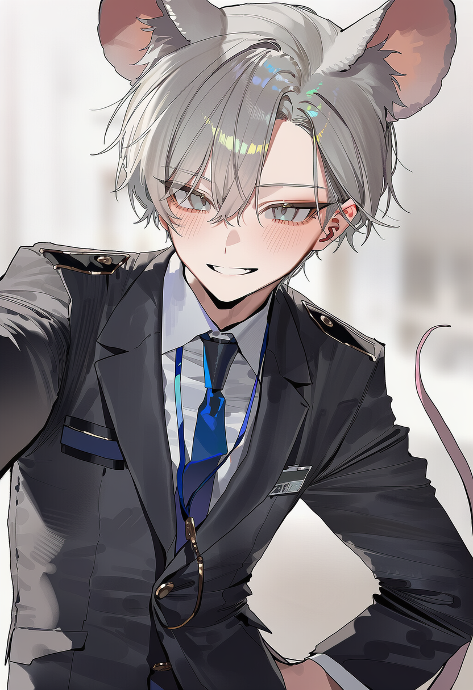
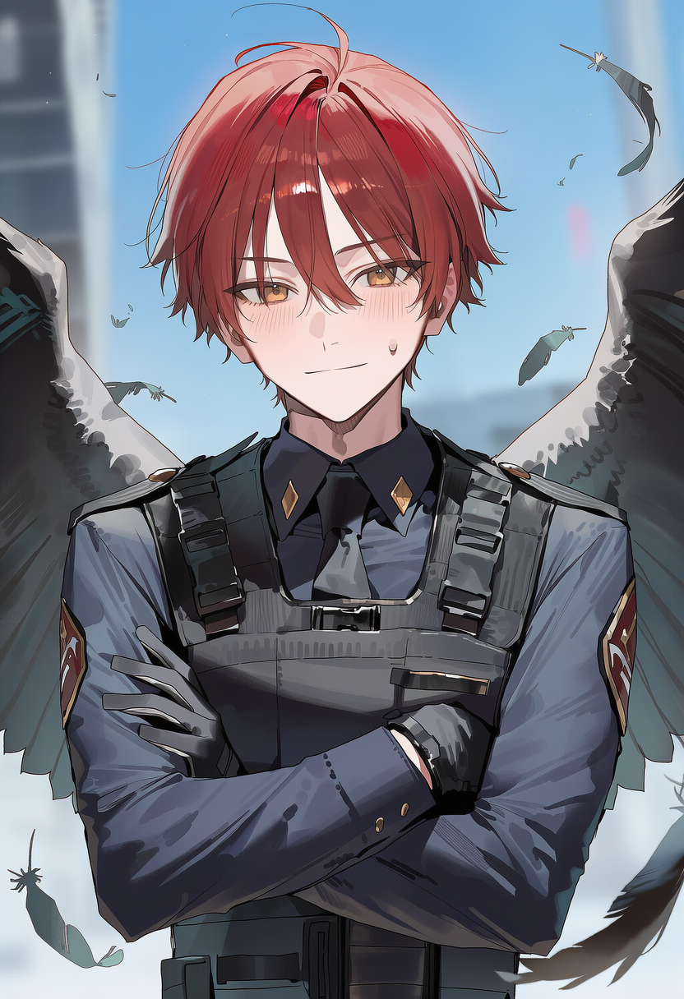
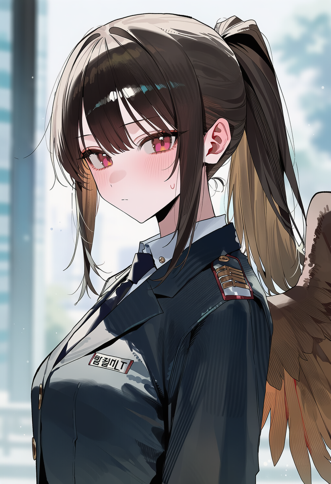
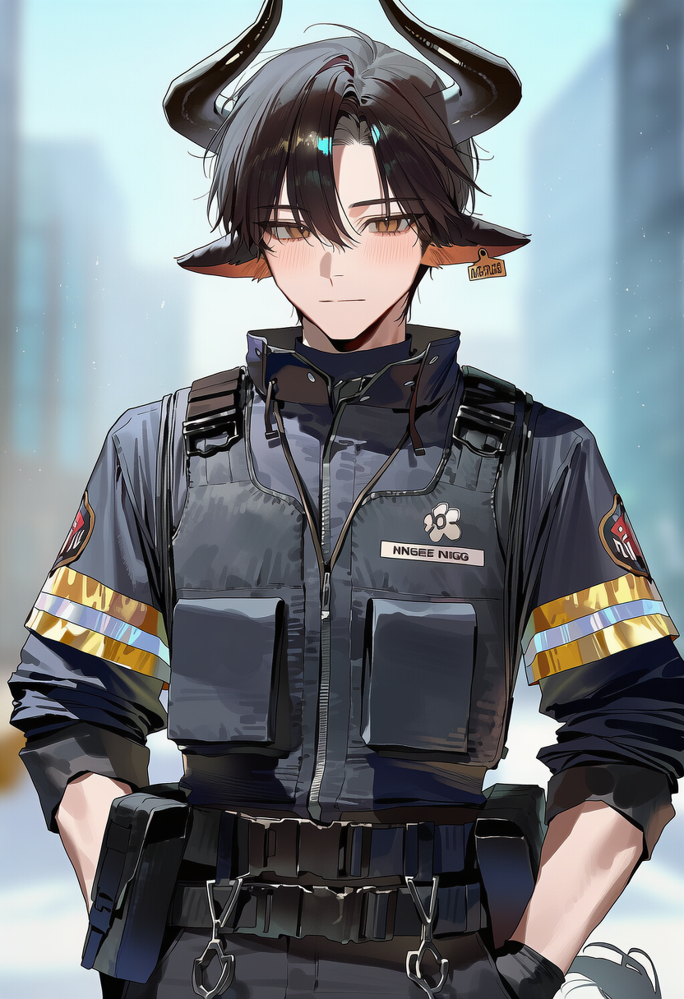
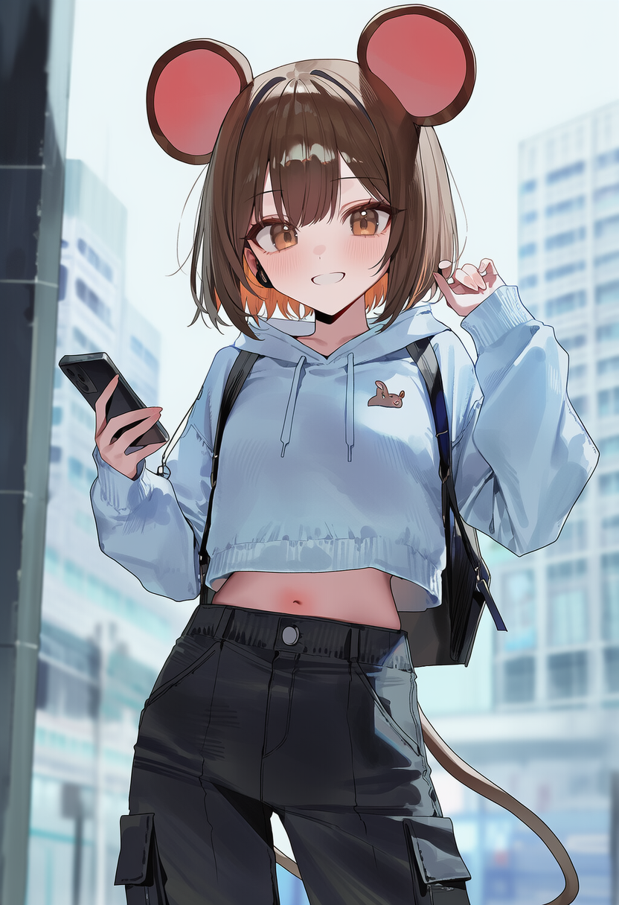
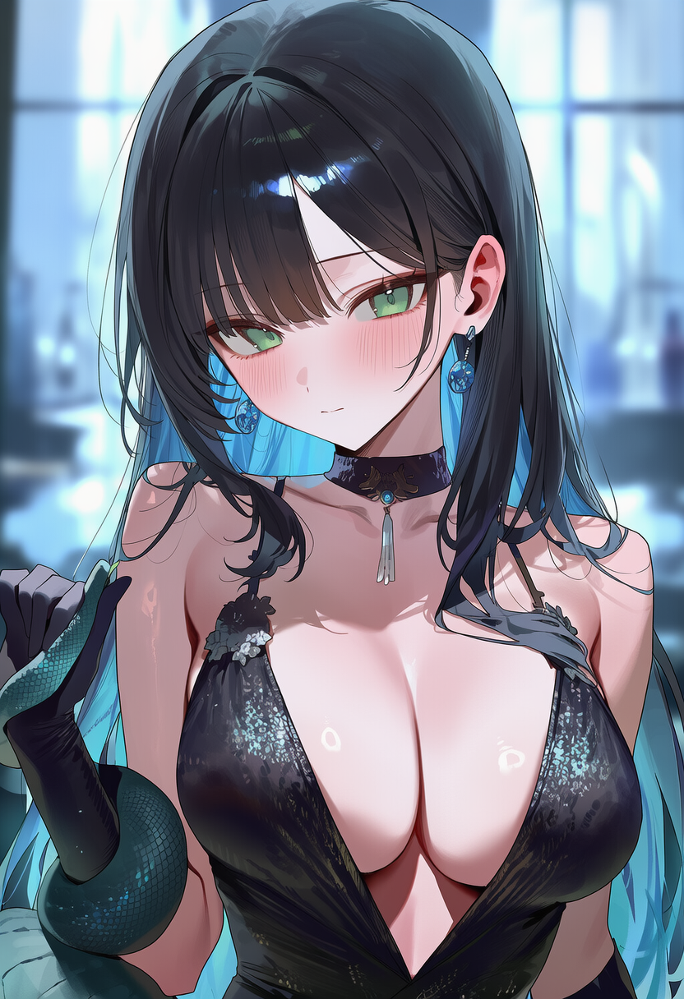
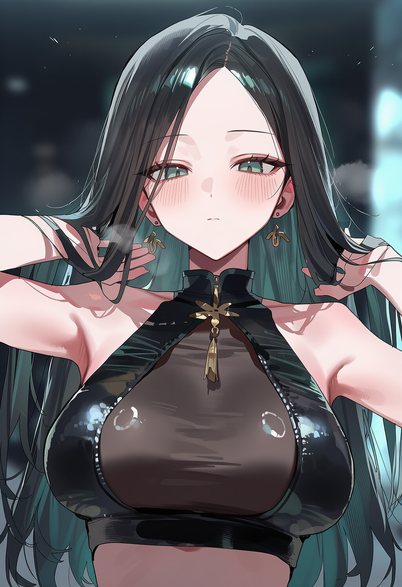
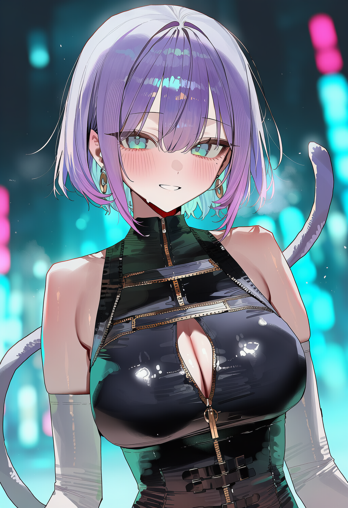
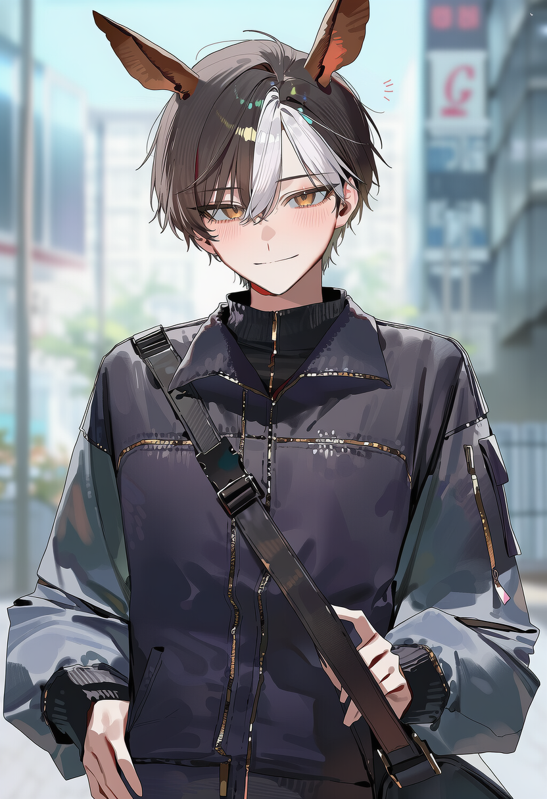
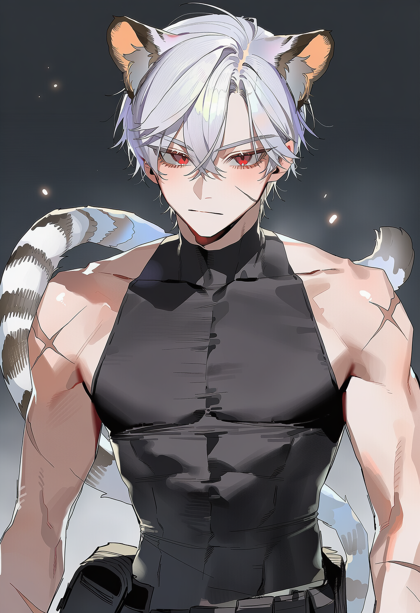

02🐂 丑 · 소
강태준
지신관리청 현장관리관
29세 · 남성 · ISTJ 1w9
우직하고 책임감이 강하며 고집이 있다. 지신관리청의 현장 통제와 대응을 담당한다.
TWELVE ZONE ARCHIVE
2016년 지신 발현 이후 변화한 서울과
그 안에서 움직이는 인간들의 기록
THE WORLD OF TWELVE ZONES
지신관리청은 서울을 12개의 특별관리구역으로 지정했다. 각 구역은 행정상 구분을 넘어 지신의 특성과 사회적 기능이 강하게 반영된 도시권으로 발전했다. 그러나 구역은 완전히 분리된 독립도시가 아니다. 사람과 물자, 정보가 끊임없이 이동하며 경찰과 관리청, 기업, 범죄조직의 이해관계가 서로 충돌한다. 따라서 서울 전체가 하나의 거대한 사회적 실험장처럼 움직이고 있다.
지신 등록과 연구, 특별관리구역의 행정 및 지신 관련 사건을 담당하는 국가기관.
지신 능력을 이용한 강력범죄와 초상 사건을 담당하는 국가 치안 세력.
정부와 정치권을 중심으로 움직이는 국가 최고 권력층. 지신 사회의 방향 자체에 영향력을 행사한다.
대기업과 미디어, 기술 및 민간자본을 기반으로 도시의 경제와 여론을 움직이는 세력.
암시장과 밀수, 정보거래, 절도, 암살 등을 중심으로 움직이는 복수의 범죄 파벌.
어느 조직에도 완전히 속하지 않는 개인과 집단. 도시의 흐름을 예측할 수 없게 만드는 변수들.
CHARACTERS OF TWELVE ZONES
지신관리청 현장관리관
29세 · 남성 · ISTJ 1w9
우직하고 책임감이 강하며 고집이 있다. 지신관리청의 현장 통제와 대응을 담당한다.
지신관리청 의료지원요원
22세 · 여성 · ISFJ 6w5
온순하고 겁이 많지만 위기 대응이 빠르다. 지신관리청의 의료지원과 인원 치료를 담당한다.
지신관리청 청장
35세 · 남성 · INTJ 5w6
냉철하고 권위적이며 조직 전체의 통제를 중시한다. 지신관리청을 총괄하는 국가 최고 실무 책임자다.
지신관리청 현장요원
30세 · 여성 · ISFJ 6w5
신중하고 보호본능이 강한 성격이다. 지신관리청의 현장 업무와 사건 대응을 담당한다.
지신관리청 연구분석관
28세 · 남성 · INTP 5w4
천재적이고 집요하며 호기심이 강하다. 지신관리청에서 지신 능력과 현상을 연구·분석한다.
지신관리청 현장요원
19세 · 여성 · INFP 4w5
소심하고 민감하지만 위기에서는 강한 생존본능을 보인다. 지신관리청에서 현장 경험을 쌓는 신입요원이다.

지신관리청 정보·행정 담당
22세 · 남성 · ESFP 7w6
활발하고 즉흥적이며 사교적인 성격이다. 지신관리청 내부 정보와 행정 기록을 관리하고 도시의 정보를 연결한다.
치안국 특수전투요원
25세 · 여성 · ESTP 8w7
강하고 독립적이며 승부욕이 강한 성격이다. 치안국 특수전투팀의 현장 전투를 담당한다.
치안국 특수수사관
34세 · 남성 · ISTJ 6w5
충성심과 책임감이 강하며 늘 주변을 경계한다. 조직범죄와 대형 사건을 전담하는 치안국 수사관이다.
치안국 현장요원
21세 · 여성 · ISFP 6w5
겁이 많고 조심스럽지만 위기 대처가 빠르다. 사건 현장의 대응과 통제를 맡는 치안국 현장요원이다.

치안국 감시·분석요원
26세 · 남성 · ISFJ 2w1
강인하고 참을성이 많으며 책임감이 강하다. 도시의 이상징후와 사건 현장을 감시·분석한다.

치안국 사건정보분석관
24세 · 여성 · INTJ 5w6
의심이 많고 집요하며 정확성을 중시한다. 사건 기록과 현장 정보를 분석해 조직범죄와 지신 사건의 연결고리를 추적한다.
대한민국 대통령
남성 · 나이 불명 · ENTJ 8w9
권위적이고 지배적이며 국가 질서를 중시한다. 국가와 지신 사회의 존립에 영향을 미치는 최고 권력자다.

소방관
26세 · 남성 · ISFJ 2w1
강인하고 참을성이 많으며 책임감이 강하다. 소방관으로서 재난 현장의 구조와 인명구호를 담당한다.
대기업총수·진구역대표
31세 · 남성 · ENTJ 3w4
야심과 지배욕이 강하고 자존심이 높은 인물이다. 기업권력을 바탕으로 진구역의 경제권에 영향력을 행사한다.
뉴스앵커·미디어인
28세 · 여성 · ENFJ 3w2
자신감이 강하고 이미지 관리와 관찰력이 뛰어나다. 지신 사회의 사건과 여론을 대중에게 전달한다.
호텔·유통경영자
25세 · 여성 · ESFP 7w6
낙천적이고 현실적이며 자기 사람에게 후하다. 호텔과 유통망을 기반으로 경제적 영향력을 행사한다.
대기업전략임원
28세 · 여성 · ENTJ 3w4
냉철하고 경쟁적이며 완벽을 추구한다. 대기업의 전략과 권력관계를 실질적으로 움직이는 기업 실세다.
아이돌·예능인
20세 · 여성 · ESFP 3w2
화려하고 관심을 즐기며 대중의 반응에 민감하다. 아이돌과 예능인으로 활동하며 대중문화에 영향력을 행사한다.

정보상·암시장중개인
23세 · 여성 · ENFP 7w6
영리하고 눈치가 빠르며 손해를 피하려는 성격이다. 암시장과 합법 세력을 연결하는 정보 브로커로 활동한다.

카지노운영자·암시장실력자
27세 · 여성 · INTJ 5w6
냉정하고 계산적이며 심리전에 능하다. 카지노와 암시장을 기반으로 거래와 협상을 주도한다.
금고 보스·범죄조직 수장
40세 · 남성 · ESTP 8w7
탐욕스럽고 호탕하지만 자기편에는 관대하다. 암시장 범죄파벌을 장악한 조직 수장이다.

청부범죄자
24세 · 여성 · ISTP 5w6
냉정하고 인내심이 강하며 감정을 억제한다. 의뢰를 받아 범죄를 수행하는 전문 청부범죄자다.
밀수조직간부
27세 · 남성 · ENTP 7w8
교활하고 눈치가 빠르며 탈출에 능하다. 도시 외곽과 구역 사이의 밀수망을 관리한다.

백야절도단도둑
22세 · 여성 · ENTP 7w6
장난스럽고 호기심이 많으며 손재주가 뛰어나다. 백야절도단에서 고난도 절도와 침입을 맡는다.

범죄조직 도주지원원
23세 · 남성 · ISFP 9w8
온순하고 친근하며 보호본능이 강한 성격이다. 범죄조직의 도주로 확보와 현장 연락을 담당한다.
특급운송업자
24세 · 남성 · ESFP 7w8
활발하고 자유분방하며 즉흥적인 성격이다. 합법과 불법을 가리지 않고 물자와 사람을 운송한다.
심리상담사
26세 · 여성 · INFJ 9w1
온화하고 공감 능력이 뛰어나며 갈등을 피하려 한다. 지신 사회의 심리 문제와 갈등을 다루는 상담사다.
천재기술자·해커
21세 · 남성 · ENTP 7w8
장난스럽지만 천재적인 사고로 규칙의 틈을 찾아낸다. 정부와 범죄조직 모두가 주목하는 기술 전문가다.
암흑사회수장
성별 · 나이 불명 · INTP 5w4
감정을 드러내지 않고 타인을 관찰하며 극단적으로 독립적이다. 도시 지하의 암흑사회를 상징하는 정체불명의 수장이다.
학생·예지능력자
17세 · 여성 · INFJ 4w5
조용하고 감수성이 풍부하며 미래를 두려워한다. 다가올 사건과 인물의 운명을 암시하는 핵심 예지능력자다.

독립범죄자·현상금사냥꾼
남성 · 나이 불명 · ISTP 8w9
강자를 추구하고 독립적이며 전투적인 성향이다. 어떤 조직에도 속하지 않고 목적에 따라 움직이는 현상금사냥꾼이다.
MAP OF SEOUL · TWELVE ZONES